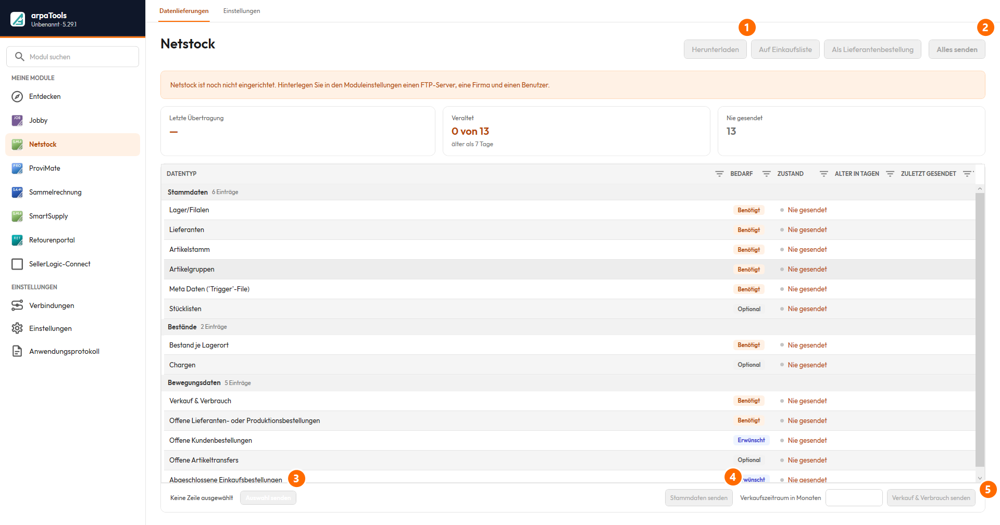
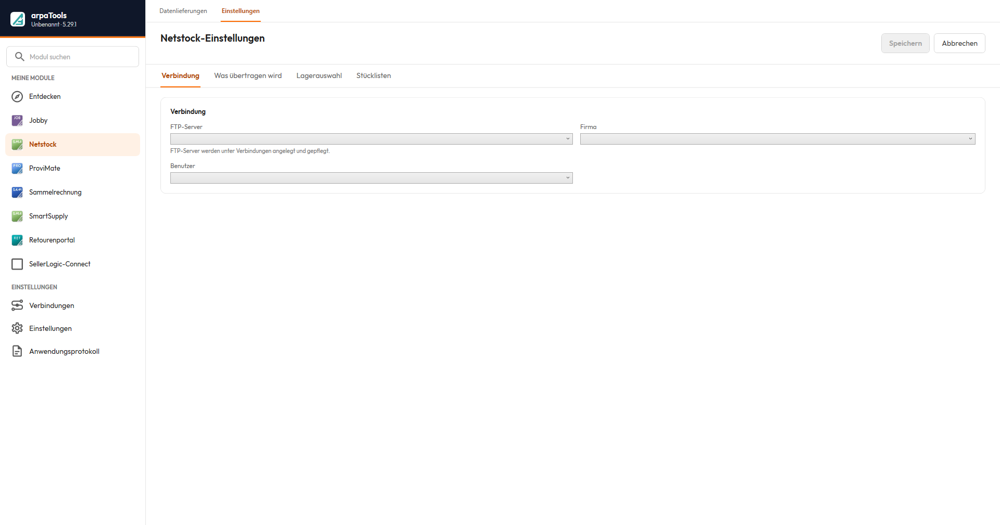
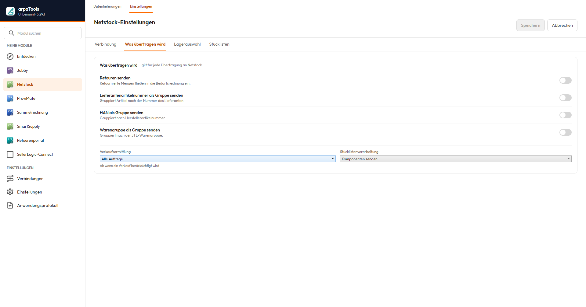
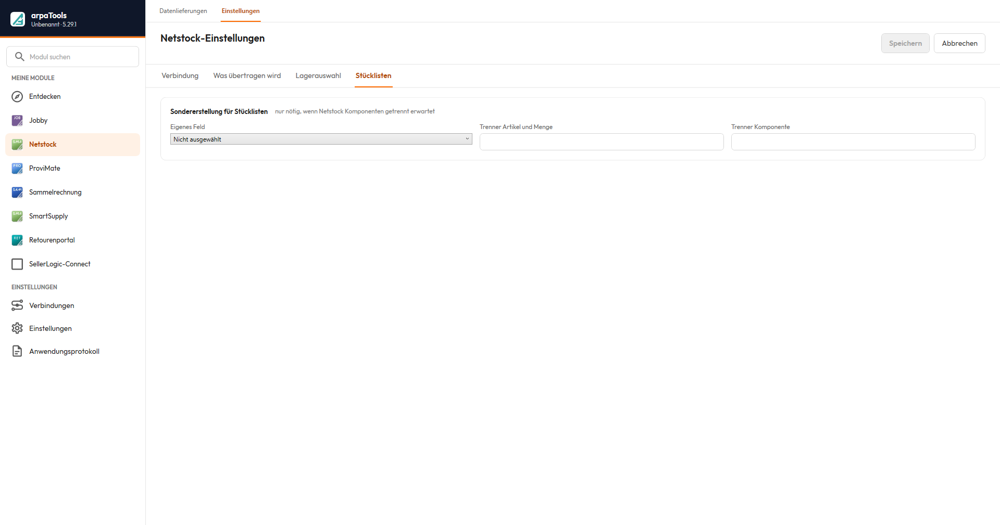

Netstock
Netstock
Auf dieser Seite
Einleitung
Netstock ist eine App im arpaTools Client und verbindet Ihre JTL-Wawi mit dem externen Bestandsplanungssystem Netstock. Netstock berechnet auf Basis Ihrer Artikel-, Bestands- und Verkaufsdaten Bedarfs- und Bestellvorschläge. arpaTools übernimmt dabei den Datenaustausch in beide Richtungen:
- Senden: arpaTools exportiert Artikel-, Bestands-, Verkaufs- und weitere Daten aus JTL-Wawi und lädt sie per FTP zu Netstock hoch.
- Empfangen: arpaTools lädt die von Netstock berechneten Bestellvorschläge per FTP herunter und kann sie wahlweise in die JTL-Einkaufsliste oder direkt als Lieferantenbestellung importieren.
Der Datenaustausch lässt sich manuell über die Netstock-Ansicht anstoßen oder automatisiert über eine Jobby-Aktion (siehe Jobby-Dokumentation, Abschnitt „Netstock"). Für automatisierte Abläufe empfehlen wir die Jobby-Aktion. Die Ansicht gliedert sich in Datenlieferungen (Tabelle und Versand) und Einstellungen.

① Herunterladen — ruft Bestellvorschläge von Netstock ab (siehe „Daten empfangen"). ② Alles senden — überträgt sämtliche Datenpakete der Tabelle. ③ Auswahl senden — überträgt nur die markierten Zeilen. ④ Stammdaten senden — Schnellzugriff für die Gruppe Stammdaten. ⑤ Verkauf & Verbrauch senden — Schnellzugriff für die Bewegungsdaten.
Voraussetzungen
- Eine FTP-Verbindung zu Netstock, eingerichtet unter Verbindungen (siehe Jobby-Dokumentation, Abschnitt „Verbindungen", Registerkarte FTP-Server). Die Zugangsdaten erhalten Sie von Netstock.
- Eine gültige Netstock-Lizenz in arpaTools.
Daten senden
Die Tabelle in Datenlieferungen listet alle Datenpakete, gruppiert nach Stammdaten, Bestände und Bewegungsdaten. Je Paket zeigt sie, ob es benötigt, gewünscht oder optional ist, den aktuellen Zustand und wann es zuletzt gesendet wurde. Folgende Datenpakete stehen zur Verfügung:
| Datenpaket | Beschreibung |
|---|---|
| Lager/Filialen | Stammdaten Ihrer Lager. |
| Lieferanten | Ihre Lieferantenstammdaten. |
| Artikelstamm | Artikel-Stammdaten. |
| Bestand je Lagerort | Aktueller Lagerbestand, aufgeschlüsselt je Lager. |
| Chargen | Chargeninformationen. |
| Artikelgruppen | Ihre Warengruppen. |
| Verkauf & Verbrauch | Verkaufs- und Verbrauchsdaten als Grundlage der Bedarfsplanung. |
| Offene Lieferanten- oder Produktionsbestellungen | Noch nicht abgeschlossene Bestellungen. |
| Offene Kundenbestellungen | Noch nicht abgeschlossene Kundenaufträge. |
| Offene Artikeltransfers | Umlagerungen zwischen Lagern, die noch nicht abgeschlossen sind. |
| Abgeschlossene Einkaufsbestellungen | Historische Einkaufsbestellungen. |
| Meta Daten ('Trigger'-File) | Steuerdatei, die Netstock signalisiert, dass ein Übertragungslauf abgeschlossen ist. Wird immer zuletzt gesendet. |
| Stücklisten | Stücklisteninformationen. |
Die Tabelle zeigt aktuell 13 Datenpakete (siehe Zähler „Nie gesendet" im Screenshot). Zwei zuvor dokumentierte Pakete, Nachfolgeartikel und Zusätzliche Daten/Optionale Felder, erscheinen darin nicht mehr.
nur in diesem Profil (ohne eingerichtete Firma) nicht angezeigt werden.
Markieren Sie eine oder mehrere Zeilen und klicken Sie auf Auswahl senden, um genau diese Pakete zu übertragen. Für die üblichen Fälle stehen zusätzlich Schnellzugriffe bereit, die eine ganze Gruppe in einem Schritt senden: Stammdaten senden für die Gruppe Stammdaten und Verkauf & Verbrauch senden für die Bewegungsdaten. Alles senden überträgt sämtliche Pakete der Tabelle.
senden" ist nicht bestätigt; vermutlich der Zeitraum der übertragenen Verkaufsdaten.
Daten empfangen
Am oberen Rand von Datenlieferungen stehen drei Schaltflächen für die von Netstock berechneten Bestellvorschläge:
- Herunterladen: lädt die Datei nur in ein Zielverzeichnis herunter, ohne sie weiter zu verarbeiten.
- Auf Einkaufsliste: importiert die Bestellvorschläge direkt in die JTL-Einkaufsliste.
- Als Lieferantenbestellung: importiert die Bestellvorschläge über JTL-Ameise direkt als Lieferantenbestellung.
Einstellungen
Die Netstock-Einstellungen gliedern sich in vier Registerkarten: Verbindung, Was übertragen wird, Lagerauswahl und Stücklisten.

Auf Verbindung legen Sie fest, welcher FTP-Server (siehe Jobby-Dokumentation, Abschnitt „Verbindungen"), welche Firma und welcher Benutzer für den Datenaustausch verwendet werden.

Auf Was übertragen wird:
- Retouren senden: retournierte Mengen fließen in die Bedarfsrechnung ein.
- Lieferantenartikelnummer als Gruppe senden: gruppiert Artikel nach der Nummer des Lieferanten.
- HAN als Gruppe senden: gruppiert nach der Herstellerartikelnummer.
- Warengruppe als Gruppe senden: gruppiert nach der JTL-Warengruppe.
- Verkaufsermittlung: ab wann ein Verkauf berücksichtigt wird, z. B. Alle Aufträge.
- Stücklistenverarbeitung: z. B. Komponenten senden (die einzelnen Bestandteile werden übertragen) statt die Stückliste als einen Artikel zu behandeln.
Auf Lagerauswahl wählen Sie je Lager, welchem Warenlager es zugeordnet ist, ob es Bestellvorschläge erhält und in welcher Gruppe es steht, dazu optional eigene Warenlager für FBA EU und FBA GB.

Auf Stücklisten tragen Sie nur bei einer Sondererstellung ein eigenes Artikel-Feld ein, aus dem Komponenten und Mengen gelesen werden, inklusive Trenner Artikel und Menge und Trenner Komponente zur Aufteilung des Feldinhalts. Nötig ist das nur, wenn Netstock die Komponenten getrennt erwartet.
Automatisierung über Jobby
Für einen regelmäßigen, automatischen Datenaustausch richten Sie in Jobby einen Job mit der Aktion Netstock ein. Die Aktion sendet die konfigurierten Datenpakete automatisch, zeitgesteuert über den arpaTools Worker. Details zur Jobby-Aktion und zu den Grundlagen von Jobby in der Jobby-Dokumentation.
Für den Download-Weg richten Sie stattdessen einen Job mit den Aktionen Download vom FTP-Server und Auf Einkaufsliste schreiben ein.
Job auf Wunsch automatisch anlegen lassen
Sie müssen diese Jobs nicht von Hand erstellen. Nach einem manuellen Lauf in der Netstock-Ansicht fragt arpaTools jeweils, ob der passende Jobby-Job automatisch angelegt werden soll, in beide Richtungen:
- Nach dem Senden: Sie werden gefragt, ob ein Sende-Job angelegt werden soll. Bei „Ja" entsteht ein Job mit der gebündelten Aktion Netstock, der Ihre Datenpakete künftig automatisch überträgt.
- Nach dem Herunterladen: Sie werden gefragt, ob ein Download-Job angelegt werden soll. Bei „Ja" entsteht ein Job mit den Aktionen Download vom FTP-Server und Auf Einkaufsliste schreiben.
Bestätigen Sie die Abfrage mit „Ja", legt arpaTools den Job an. Sie können ihn danach in Jobby prüfen und den Zeitplan anpassen.
Hinweis: Die automatische Anlage des Download-Jobs erstellt nur den Weg auf die Einkaufsliste. Möchten Sie die Bestellvorschläge stattdessen direkt als Lieferantenbestellung importieren, richten Sie diesen Job derzeit von Hand in Jobby ein.